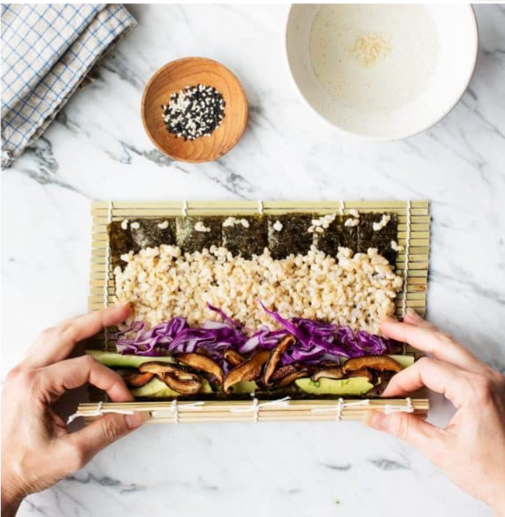
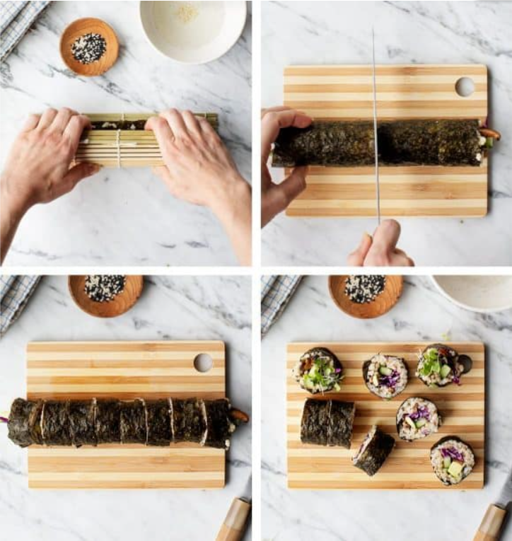

A fun and tasty recipe, where you can get creative about the filling.
These maki sushi rolls are filled with savory roasted shiitake mushrooms,
avocado, cucumber, and red cabbage for crunch & color. There’s also a fun
dipping sauce carrot ginger dressing
Ratings:
Difficulty:
schedule: 1 hr
skillet: 20 mins
Total Time: 1 hr 20 mins
groups_2: Serves 2 (makes 3 rolls)
Roasted Shiitakes
6 ounces shiitake mushrooms
1 tablespoon extra-virgin olive oil
1 tablespoon tamari
Carrot ginger dipping sauce
½ cup chopped roasted carrots, about ¾ cup raw carrots
⅓ to ½ cup water
¼ cup extra-virgin olive oil
2 tablespoons rice vinegar
2 teaspoons minced ginger
¼ teaspoon sea salt
Sushi rice
1 cup short grain brown rice, rinsed well
2 cups water
1 teaspoon extra-virgin olive oil
2 tablespoons rice vinegar
1 tablespoon cane sugar
1 teaspoon sea salt
For making the rolls
3 nori sheets
1 cup thinly sliced red cabbage
3 long thin strips of cucumber
½ avocado, sliced into strips
Sesame seeds, for sprinkling
Tamari, for serving
Pickled ginger, optional, for serving
Instructions
Prepare the roasted shiitakes: Preheat the oven to 400°F and line a
large and small baking sheet with parchment paper. Toss the shiitake
mushrooms with the olive oil and tamari and toss to coat. Spread in an
even layer on the large baking sheet. Roast for 25 to 30 minutes or
until browned around the edges. On the second sheet, roast the carrots
for the dipping sauce.
Make the carrot ginger dipping sauce: In a blender, combine the
roasted carrots, water, olive oil, rice vinegar, ginger, and salt and
blend until creamy. Chill until ready to use and set aside the
shiitakes until you're ready to roll.
Make the sushi rice: In a medium saucepan, combine the rice, water,
and olive oil and bring to a boil. Cover, reduce the heat, and simmer
for 45 minutes. Remove the rice from heat and let sit, covered, for 10
more minutes. Fluff with a fork and fold in the rice vinegar, sugar,
and salt. Cover until ready to use.
Assemble the maki sushi rolls. Place a small bowl of water and a
kitchen towel near your work area as your hands will get sticky. Place
one nori sheet, glossy side down, onto a bamboo mat and press a
handful of rice onto the lower two-thirds of the sheet. At the bottom
of the rice place your toppings (see picture). Don’t overfill or it
will be more difficult to roll. Use the bamboo mat to tuck and roll
the nori. Once rolled, use the bamboo mat to gently press and shape
the roll. Place the roll to the side, cut side down. Repeat with
remaining rolls.


Use a sharp chef’s knife to cut the sushi. Wipe the knife clean with a
damp towel between cuts.
Sprinkle with sesame seeds. Serve with the dipping sauce, tamari, and
pickled ginger, if desired.